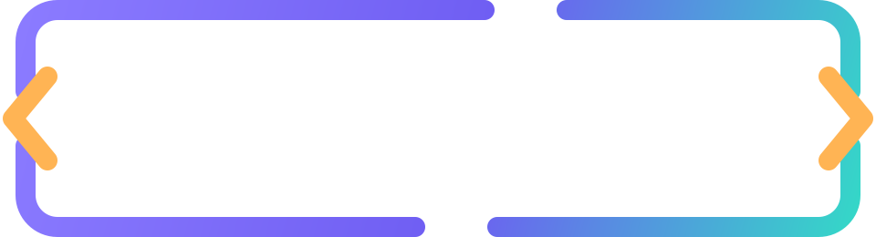

Un detalle que abre puertas
Tu proyecto,
a un clic.
Conecta tus redes con un bloque de cristal. Pasa el cursor o usa Tab para probar el efecto.
Edita los enlaces y las variables de color para hacerlo tuyo.

Un detalle que abre puertas
Conecta tus redes con un bloque de cristal. Pasa el cursor o usa Tab para probar el efecto.
Edita los enlaces y las variables de color para hacerlo tuyo.